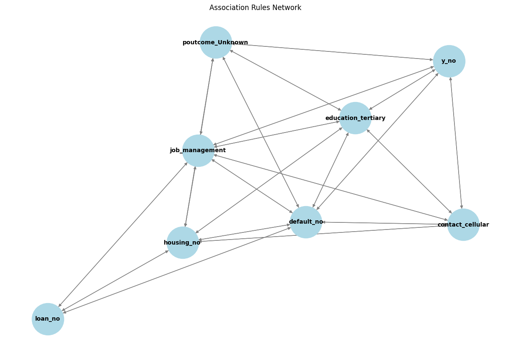

Association Rule Mining (ARM) is a data mining technique used to identify patterns and relationships between different items in large datasets. It is commonly applied in market basket analysis, where businesses analyze customer purchase behavior to discover which products are frequently bought together. ARM helps uncover hidden correlations that can be used for recommendation systems, cross-selling strategies, and decision-making.
Key Measures in ARM
Support: The frequency of an itemset appearing in the dataset.
Support(X) = (Transactions containing X) / (Total transactions)
Confidence: The likelihood that a transaction containing X also contains Y.
Confidence(X → Y) = Support(X ∪ Y) / Support(X)
Lift: Measures how much more likely Y is to appear with X compared to when they are independent.
Lift(X → Y) = Confidence(X → Y) / Support(Y)
Lift > 1: Items X and Y occur together more often than expected by chance.
Lift = 1: No significant association.
Lift < 1: Items X and Y occur together less often than expected.
What are Association Rules?
An association rule is an implication of the form X → Y, meaning "if X occurs, then Y is likely to occur."
For example, in retail analysis, a rule like:
{Bread, Butter} → {Milk}
suggests that customers who buy bread and butter are likely to buy milk as well.
The Apriori Algorithm: How It Works
Apriori is one of the most popular algorithms for Association Rule Mining (ARM). It works by iteratively finding frequent itemsets and generating rules from them.
Steps of the Apriori Algorithm
Calculate Support for Individual Items: Identify items that meet the minimum support threshold.
Generate Frequent Itemsets: Combine individual items to form pairs (2-itemsets), then triplets (3-itemsets), and so on.
Prune Infrequent Itemsets: Remove itemsets that do not meet the minimum support requirement.
Generate Association Rules: Compute confidence and lift for the frequent itemsets. Keep rules that satisfy the minimum confidence threshold.
The Apriori algorithm is efficient because it uses the "Apriori Principle", which states:
If an itemset is infrequent, all its supersets must also be infrequent.
This helps in reducing the search space and improving performance.
Clustering groups similar items together, as shown by bread and butter in the same circle. In contrast, ARM identifies relationships between items, represented by the arrow from bread to butter, implying a purchasing pattern. While clustering finds inherent groups, ARM focuses on if-then associations, making both techniques valuable for different types of data analysis.
The dataset was carefully preprocessed to ensure it met the requirements for Association Rule Mining (ARM). First, numerical attributes that were not relevant for identifying associations were removed. Categorical variables were then transformed into a transactional format using one-hot encoding, where each row represents a unique transaction containing different categorical attributes. This step ensures that the dataset is structured for frequent pattern mining. Finally, the cleaned data was formatted into a CSV file without headers, making it compatible with ARM techniques like the Apriori algorithm for uncovering meaningful patterns and associations.
Association Rule Mining (ARM) is used in this project to uncover hidden relationships between different features in the dataset. It helps identify patterns, such as which factors are strongly linked to a successful marketing campaign. This is useful for decision-making, such as improving customer targeting strategies.
Key Measures in ARM
In the context of this project, ARM uses the following metrics to assess the strength of discovered patterns:
Support: The proportion of records in which a particular feature combination appears.
Example: If 30% of customers had both "previous contact" and "high balance," the support is 0.30.
Confidence: The likelihood that a second feature is present given the first feature is already observed.
Example: 80% of customers who were contacted previously also subscribed to the term deposit.
Lift: Measures how much more likely the second feature is to occur compared to when they are independent.
Example: A lift of 2.5 for "previous contact → subscription" means that customers who were previously contacted are 2.5 times more likely to subscribe than a random customer.
Association Rules in This Project
ARM generates rules that describe strong relationships between features. A typical rule looks like this:
{Long Call Duration, Previous Contact} → {Subscribed}
This suggests that customers who had a long conversation and were contacted previously are more likely to subscribe to the term deposit.
Apriori Algorithm: How It Works in This Project
Identifying frequent individual features that meet a minimum support threshold.
Combining features to form pairs (2-itemsets), then triplets (3-itemsets), etc.
Filtering out infrequent itemsets, ensuring only strong relationships remain.
Generating association rules by calculating confidence and lift values.
How This Helps in the Project
Identifies which customer attributes strongly influence campaign success.
Helps optimize marketing strategies by focusing on features that lead to higher conversion rates.
Provides data-driven insights for future customer engagement.

The network graph visualizes relationships between features (attributes) in the dataset based on association rules extracted from the Apriori algorithm. Each node represents an item (categorical variable), and each edge (arrow) indicates a strong association between two items.
Observations from the Graph:
"loan_no" is strongly connected:
"loan_no" is associated with multiple attributes, including housing_no, job_management, and default_no.
This suggests that people who do not have a loan are also more likely to not have housing loans and may have specific job roles (like management).
"job_management" is central to multiple associations:
It connects with default_no, poutcome_Unknown, and housing_no.
This suggests that individuals in management roles are likely to have specific financial behaviors.
"y_no" (no subscription to the term deposit) is linked to multiple features:
The outcome y_no (indicating no subscription to the marketing campaign) is associated with contact_cellular, education_tertiary, and default_no.
This implies that people with tertiary education, no default history, and those contacted via cellular may have a pattern of declining the term deposit offer.
"poutcome_Unknown" is frequently associated:
This indicates that the previous marketing outcome being unknown is an important factor in predicting associations.
Association Rule Mining (ARM) helps uncover interesting relationships between features in a dataset. The graphs below visualize the top 15 rules sorted by Support, Confidence, and Lift, providing a well-rounded view of frequently occurring, reliable, and statistically strong patterns.
Top 15 Association Rules by Support
Support measures how frequently a rule appears in the dataset. Higher support means the rule involves items that often occur together.
Observations from the Graph:
The most frequent rule is loan_no → default_no, suggesting that many clients who did not take a loan also did not default, highlighting a strong general trend.
Rules like y_no → poutcome_Unknown and default_no → loan_no also have high support, showing common behavioral patterns among clients.
Many rules here involve the absence of default or loan, indicating that the dataset is skewed toward cautious or financially stable individuals.
These rules might not be the most surprising, but they reflect the dominant patterns in the data and can help with baseline decision-making.
Top 15 Association Rules by Confidence
Confidence indicates the likelihood of the consequent occurring given the antecedent. Higher confidence means the rule is more predictive.
Observations from the Graph:
Most top rules predict poutcome_Unknown, which may suggest follow-ups were either not effective or not recorded.
The rule education_primary, contact_Unknown → poutcome_Unknown has perfect or near-perfect confidence, implying that this combination almost always results in an unknown campaign outcome.
Multiple rules involve contact_Unknown and housing_yes, hinting that certain demographics consistently led to unclear or unrecorded outcomes.
High-confidence rules are useful for making targeted predictions — e.g., identifying which customer profiles are most likely to lead to specific results.
Top 15 Association Rules by Lift
Lift evaluates the strength of a rule compared to random chance. A lift > 1 means the rule is more significant than what would happen by coincidence.
Observations from the Graph:
The rule poutcome_Unknown, default_no, job_management, contact_cellular → education_tertiary, housing_no, y_no has the highest lift, revealing a strong and non-obvious relationship between job type, contact method, and campaign response.
Many rules with high lift include education_tertiary, job_management, and housing_no, suggesting that individuals with higher education and certain job types form a highly correlated behavioral group.
Compared to support/confidence graphs, these rules are less frequent but more insightful, often revealing niche but valuable segments.
Lift helps identify hidden patterns — rules that are statistically stronger than they appear at first glance.
KEY FINDINGS
Top 15 Rules by Support (Most Frequent Associations)
These rules highlight the most commonly occurring itemsets in the dataset.
Threshold Used: Minimum Support = 0.05 (5%)
"default_no" → "loan_no" has a high support (0.82), meaning a significant number of individuals who do not have a credit default also do not have a loan.
"poutcome_Unknown" → "y_no" suggests that when the outcome of a previous marketing campaign is unknown, customers are less likely to subscribe to a new offer.
"default_no" → "contact_cellular" implies that individuals without credit defaults are frequently contacted via cellular.
Top 15 Rules by Confidence (Strongest Predictive Power)
These rules show the probability that the consequent occurs, given that the antecedent is present.
Threshold Used: Minimum Confidence = 0.80 (80%)
Education and Contact Method Influence Marketing Outcomes: Customers with primary education and contacted via unknown channels have a 99.8% probability of having an unknown outcome in the marketing campaign.
Housing and Marital Status Matter: People who are married, have no housing loans, and were contacted via unknown methods show strong associations with campaign outcomes.
Multiple Attributes Together Strengthen Confidence: Rules containing y_no (not subscribing to the offer), education level, and contact method had the highest confidence values.
Top 15 Rules by Lift (Strongest Relationships Beyond Randomness)
Lift measures the strength of a rule beyond chance.
Threshold Used: Minimum Lift = 1.0 (Rules must be better than random chance)
Job Management and Financial Status: People working in management roles without loans and housing loans have a high lift score (3.55) when predicting their campaign response.
Multiple Financial Factors Together Increase Predictability: Customers who have no loan, no housing, and a management job show a 3.55 times higher likelihood of responding a certain way to the marketing campaign than random chance.
CONCLUSION
Financial Stability Matters – Customers who do not have loans or credit defaults show distinct behaviors in marketing campaigns.
Past Interactions Influence Decisions – If a customer’s previous outcome is unknown, they are less likely to respond positively to new campaigns.
Communication Method Impacts Response – People contacted via cellular show different trends compared to other methods.
Demographics Play a Role – Marital status, education, and job type have a strong influence on financial and marketing decisions.